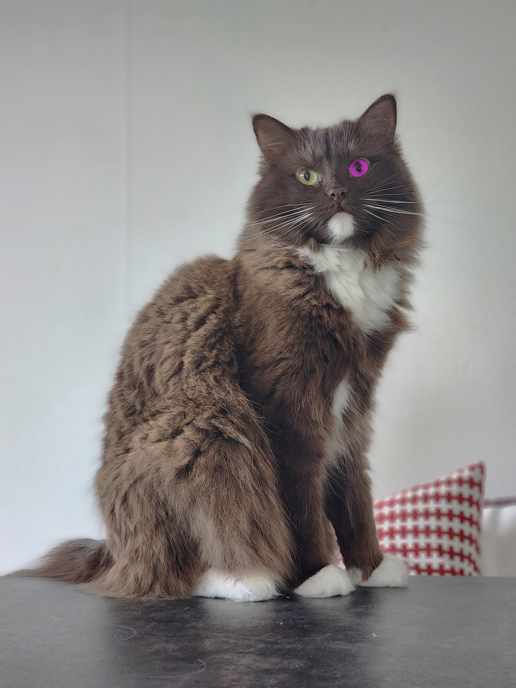

Orginalbild

Redigerad bild
Bildens brightness/contrast, curves, color balance och hue/saturation har justerats för att försöka få til en liknande känsla i alla bilder. På denna bild använde jag mig också extra av hue/saturation för att kunna ändra färg på det lila ögat.

Orginalbild

Redigerad bild
Bildens brightness/contrast, curves, color balance och hue/saturation har justerats för att försöka få till en liknande känsla i alla bilder. På denna bild tog jag hjälp av vertygen patch tool och clone tool för att ta bort hen som står och yogar på bilden.

Orginalbild

Redigerad bild
På denna bild har jag justerat brightness/contrast, curves, color balance och hue/saturation för att försöka nå en liknande känsla som de alla bilderna.